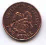
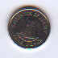
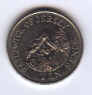
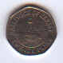
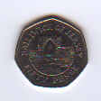
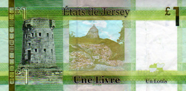
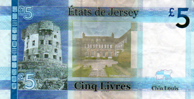
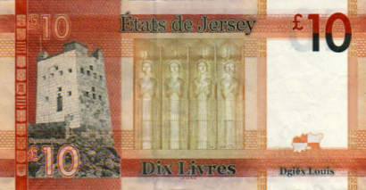
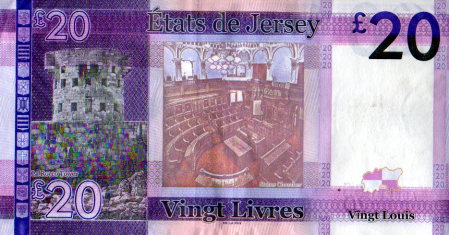

un pénîn
La pièche d'un pénîn a un portrait d'la Tou du Ho

deux pénîns
La pièche dé deux pénîns a un portrait d'l'Hèrmitage

chîn pénîns
La pièche dé chîn pénîns a un portrait d'l'Avathîson

dgiêx pénîns
La pièche dé dgiêx pénîns a un portrait d'la Pouquelaye dé Faldou

vîngt pénîns
La pièche dé vîngt pénîns a un portrait d'la Veue d'la Corbiéthe

chînquante pénîns
La pièche dé chînquante pénîns a un portrait du Châté d'Grosnez

un louis

chîn louis

dgiêx louis

vîngt louis
Les vielles billes
La bille d'un louis avait un portrait d'l'Églyise dé St. Hélyi
La bille dé chîn louis avait un portrait d'la Veue d'la Corbiéthe
La bille dé dgiêx louis avait un portrait d'la Batâle dé Jèrri
La bille dé vîngt louis avait un portrait du Mangni d'St. Ouën
La bille dé chînquante louis avait un portrait d'la Maîson du Gouvèrneux, la pièche dé deux louis a l's êtchussons des douze Pâraîsses, et les difféthentes pièches d'un louis ont d's êtchussons des douze Pâraîsses et des portraits d'navithes Jèrriais.
Viyiz étout: